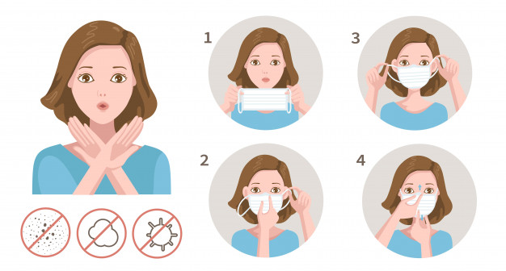

<ion-app>
  <ion-content fullscreen class="ion-padding" scroll-y="false">
    <ion-slides>

      <ion-slide>
        <div class="slide">
          
          <h2>Lavar as mãos frequentemente</h2>
          <p>O sabão rompe a membrana de gordura que os vírus possuem, fazendo com que "morram". Por isso, segundo a OMS (Organização Mundial da Saúde), lavar as mãos com água e sabão frequentemente é uma das principais formas de evitar a contaminação.</p>
          <p>A recomendação é fazer isso o tempo todo, principalmente ao entrar em contato com outras pessoas, ir à rua, tocar em objetos de uso comum (maçanetas, botão do elevador, corrimão etc.), antes de comer ou preparar alimentos e depois de usar o banheiro.</p>
        </div>
      </ion-slide>

      <ion-slide>
        
        <h2>Ficar em casa e sair somente quando for realmente necessário</h2>
        <p>Como nosso organismo ainda não tem anticorpos para combater o novo coronavírus, ele é transmitido facilmente de um indivíduo para outro. Se as pessoas continuarem levando uma vida normal (indo trabalhar, frequentando lugares aglomerados etc.), o número de pacientes com covid-19 tende a se elevar rapidamente e sobrecarregar o sistema de saúde. Assim, os hospitais não conseguem atender adequadamente casos graves e o número de mortes aumentam.</p>
        <p>Segundo pesquisa epidemiológica do Instituto Butantan, no estado de São Paulo, uma pessoa infectada antes do isolamento tinha potencial para transmitir o vírus para seis pessoas, em média. Com a quarentena, essa taxa caiu para duas pessoas. Por isso é muito importante que todos continuem em casa para evitar o crescimento acentuado da covid-19.</p>
      </ion-slide>

      <ion-slide>
        
        <h2>Usar Máscara</h2>
        <p>Nenhuma máscara garante 100% de proteção. Porém, o acessório —até mesmo a máscara de tecido feita em casa — é capaz de impedir que partículas maiores de secreções (saliva, por exemplo) contaminadas cheguem até seu nariz e sua boca. Além disso, evita que o doente espalhe secreções pelo ambiente.</p>
        <p><b>Atenção:</b> esse uso não permite que outras medidas preventivas sejam deixadas de lado, como sempre lavar as mãos, evitar o contato físico etc.</p>
      </ion-slide>

      <ion-slide>
        
        <h2>Higienizar as mãos com álcool gel</h2>
        <p>É fundamental reforçar um hábito básico de higiene: lavar as mãos com água e sabão. E quando não for possível, o álcool gel serve como substituto para essa higienização.</p>
        <p>O produto também deve ser utilizado para desinfetar celulares, teclados, cadeiras, maçanetas e outros objetos que sejam de uso coletivo e tocados por várias pessoas com frequência. Utilize um pano úmido com a substância.</p>
      </ion-slide>

      <ion-slide>
        
        <h2>Tossir e espirrar corretamente</h2>
        <p>O coronavírus é transmitido principalmente pelas secreções (saliva, catarro). Por isso, é muito importante seguir as orientações de higiene do Ministério da Saúde.</p>
        <p>Sempre cubra o nariz e a boca com um lenço de papel ao tossir e espirrar. Depois, jogue o lenço no lixo e higienize as mãos (com água e sabão ou álcool em gel). Se você não tiver um lenço disponível, cubra o nariz e a boca com o braço dobrado, usando a "parte interna do cotovelo", e nunca as mãos.</p>
      </ion-slide>

      <ion-slide>
        
        <h2>Sobre ter uma pessoa infectada em casa</h2>
        <p>Obviamente, conviver com alguém infectado aumenta o risco de você contrair o coronavírus. Por isso, é muito importante que esse paciente permaneça isolado em um quarto bem ventilado, mas que a porta fique sempre fechada. Se possível, a pessoa doente deve ter um banheiro só para ela. Além disso, não pode compartilhar nenhum objeto (toalha, louças, travesseiro, roupas).</p>
        <p>Tudo que a pessoa infectada utilizar —inclusive o banheiro, se ele não for exclusivo — deve ser imediatamente higienizado com água e sabão, álcool 70% ou água sanitária. Use máscara e luvas para fazer isso.</p>
      </ion-slide>

      <ion-slide>
        
        <h2>Descartar lixo infectado pelo Covid-19 corretamente</h2>
        <p>O infectado deve ter um lixo exclusivo para descartar resíduos e até máscaras e luvas, sempre que forem usadas. O lixo deve ser isolado em um saco plástico e lacrado antes de ser descartado.</p>
        <p>Quem for coletar esse saco deve usar luvas, que precisam ser jogadas fora imediatamente após o lixo ser removido. A pessoa não deve tocar em nada e lavar as mãos em seguida.</p>
      </ion-slide>

      <ion-slide>
        
        <h2>Produtos de limpeza que matam o Coronavírus</h2>
        <p>Água e sabão, álcool 70% e água sanitária são os produtos mais indicados para higienizar ambientes e objetos e "matar" o novo coronavírus.</p>
        <p>Além desses, de acordo com João Prats, infectologista da BP - A Beneficência Portuguesa de São Paulo, qualquer outro produto de limpeza com cloro, álcool e ação desengordurante ou desinfetante é efetivo para acabar com o micro-organismo.</p>
      </ion-slide>

      <ion-slide>
        
        <h2>Cuidados ao ir ao mercado ou à farmacia</h2>
        <p>O ideal é realizar compras online. Se não for possível e precisar sair para ir ao mercado ou à farmácia, procure fazer isso em um horário em que o estabelecimento costuma estar vazio.</p>
        <p>Durante as compras, considere que suas mãos estão contaminadas o tempo todo e nunca toque a boca, o nariz ou os olhos. Procure também manter uma distância de 1,5 m a 2 m para outras pessoas e evite ao máximo conversar. Lave as mãos ou use álcool em gel assim que finalizar as compras —ou imediatamente após chegar em casa.</p>
      </ion-slide>

      <ion-slide>
        
        <h2>Cuidados ao chegar em casa</h2>
        <p>Até o momento, não foi comprovado que ocorra a contaminação indireta do coronavírus. Ou seja, não sabemos se um vírus presente no seu sapato ou na sacola do mercado tem potencial para deixar você doente (depois de ser levado até a boca ou nariz, claro). Porém, nesse momento é melhor ter cuidado ao voltar para casa. Então, reserve um calçado só para sair e não ande com ele dentro de casa.</p>
        <p>Quando voltar da rua, tome banho —ou pelo menos lave muito bem as mãos e o rosto com água e sabão — e coloque as roupas para lavar.</p>
      </ion-slide>

      <ion-slide>
        
        <h2>Limpar as compras e pedidos de delivery</h2>
        <p>O cuidado principal ao receber compras é não ter contato físico com o entregador —mesmo que ele não esteja infectado, passou por várias casas e pode estar carregando o vírus em suas mãos.</p>
        <p>Até o momento, não está comprovado que ocorra contaminação indireta do coronavírus. Ou seja, não sabemos se o vírus presente em uma embalagem deixa você doente. Porém, já foi identificado que ele pode viver até 24 horas em papelão e de dois a três dias em plástico. Portanto, não custa tomar cuidado. Ao receber pedidos de delivery ou chegar com compras, retire os produtos da embalagem —ou higienize os recipientes com água e sabão ou álcool 70% — e depois lave bem as mãos.</p>
      </ion-slide>

      <ion-slide class="total">
      
          <div class="fonte">
            <h2>Fontes:</h2>
            <a href="https://www.uol.com.br/vivabem/faq/coronavirus-cuidados-que-voce-deve-ter-para-se-prevenir-da-covid-19.htm"> https://www.uol.com.br/vivabem/faq/coronavirus-cuidados-que-voce-deve-ter-para-se-prevenir-da-covid-19.htm</a> <br>
            <a href="https://drauziovarella.uol.com.br/coronavirus/alcool-gel-ajuda-a-prevenir-o-novo-coronavirus/">https://drauziovarella.uol.com.br/coronavirus/alcool-gel-ajuda-a-prevenir-o-novo-coronavirus/</a> <br>
            <a href="https://coronavirus.saude.gov.br/sobre-a-doenca">https://coronavirus.saude.gov.br/sobre-a-doenca</a> <br>
          </div>
      </ion-slide>

    </ion-slides>
  </ion-content>
</ion-app>